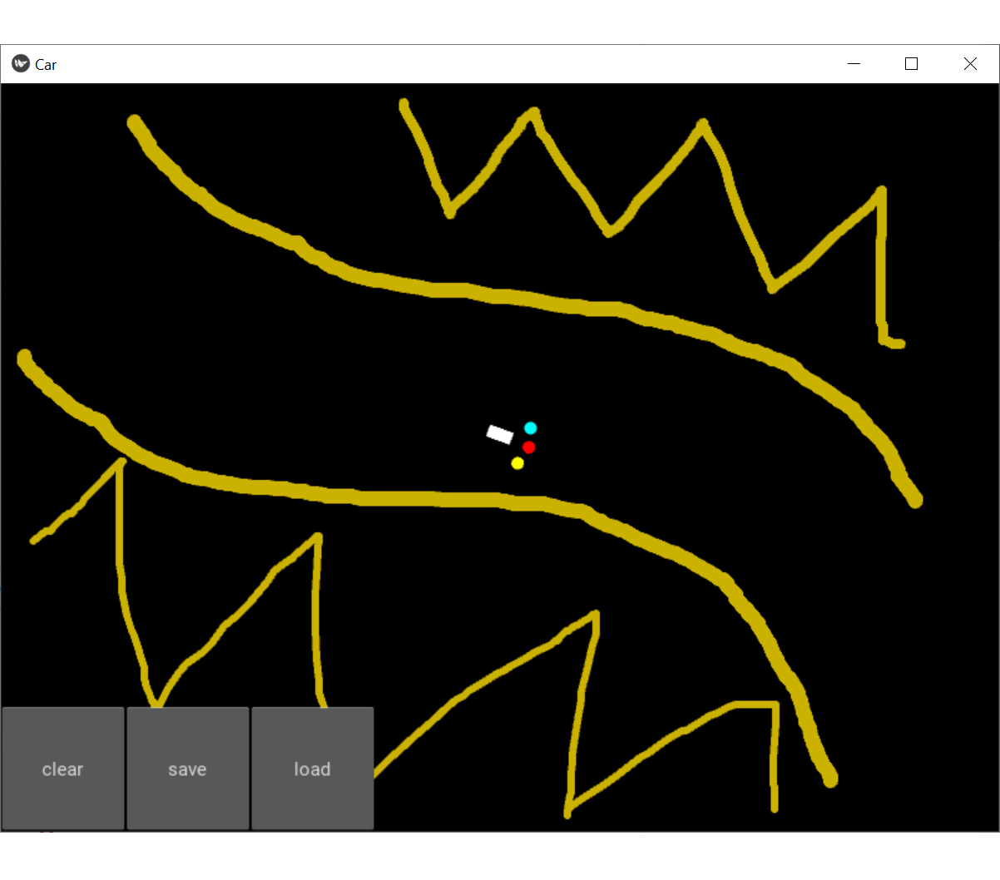

SIWAT PHOTJANAVORAPONG
A easy-going man who tries so hard to become an A.I. leader of Asia.
A brief history of me
Hello to everyone who read this page. My name is Siwat Photjanavorapong and my nickname is Peak, like the top of a mountain. I'm highschool student who is absolutely interest and curious in Artificail Inelligence and the direction of humanity's future. I was born in a small city near the capital city of Thailand, Ratchaburi. At first, I was just a normal student who just interest in computer but still have no serious idea about my future.
One day, I saw one man in Youtube and he said that he created the rockets that better than NASA, also he will going to do something called 'Hyperloop' which would allow people to travel 670 mph and etc. Of course, This main name is Elon Reeve Musk. At that time, I had absolutely know idea about Tesla electric car, Falcon 9 or Hyperloop ,but Elon just amazed me. It was the first time I realize importantance of technology and the incredible future that they can bring us to. So I came up with the plan to become a A.I. scientist in the future, but after hard thinking and passion about these things for many months, A.I., Blockchain, BigData and etc., I thought that it would be more interesting for me to create my tech startup, because this would allow me to be a part of building our future. In 2019, I decided to spend my year aboard in the United State of America, I lived in the Oregon state, in the west coast, with a signifant number of host families. The major reasons why I spent my year aboard because I wanted to see the lives of people in developed country, how they live differently from us and what can we learn from them, also upgraded my English skills at the same time, and more importantly I wanted to have the wider vison for my startup in the future and for me to understand the world better. Moreover, I was very lucky that I had an opportunity to lived with the host families because that allow me to experienced lives of people above, average and below the poverty line. It was the greatest experience that I had ever face in my life.
About my personality, I would say I am a thinker because I always think about everything that happen around me and tries to analysis them. I likes to watch movie so that give me lots of inspiration and perception, and in many times it gave my many greate ideas. In my free time, I'm the one who really like to play chess. I did challenge myself last year before, that I must beat every chess player and become No.1 chess player in my school - I accomplish it. Currently, I am work so hard to understand the market
My Skills
Analyze
Creativity
Vision
Friends (around the world)
Computer projects and labs
ACT MATH
IELTS
A breif study experience of me
I spent six years in Benjamarachutit Ratchaburi school. It is a place that taught me many things, not just good education but also how to lives in thai society as well. In the first 3 years, in 7 to 9 grades, I was accepted into computer gifted classroom, which was the place where everything began. In this gifted classroom, they taught both basic and high level programing. After several years of studing, I got the highest score in the programing class that made me was elected to be the one who would go to the regional computer competition since 8 grades, which was a competition for 9 to 12 grades. I won the first runner up or the second place of the WebText editor competition, which was website creating competition and not allowed to use any tools. After that, I decided to not apply for this competition agian in the next year, because I wanted to pay attention to the test for jion the highschool entrance examination. I graduate with 3.01 GPA and decided to study in highschool at the same school.
In my 11 grades, I spent my year aboard in Oregon, USA, because I wanted to see the lives of people in developed country, how they live differently from us and what can we learn from them, also upgraded my English skills at the same time, and more importantly I wanted to have the wider vison for my startup in the future and for me to understand the world better. Durring my year aboard, as you might see on my transcript, I decided to drop out from my computer programing class. The only reasons for me to did this is because I already knew everything that they were going to teach, I studied it since 8 grades. In my thought, it would be better if I spent that time study something that I was interested and did not understand yet, it was the A.I. That was the first time that I had experience with A.I. Honestly, at that time, it was the most complicate thing that I had ever face in my life. I knew that one they it would change the world, it was the reasons why decided to study it. My exchange years was the most significant year in my highschool life, I got a significant amount of good memories and experience. After I came back to Thailand, I still hope one day I would come to the USA again. I skipped my 10 grades in Thailand and studied in 12 grades. My school has very difficult criteria for grades, also the credit from American highschool can not transfer into Thai highschool so that why I do not have any GPA in my 10 grades, also decreased my overall GPA at the same time.
I graduated from Benjamarachutit Ratchaburi school with 2.61 GPA and continue study at King Mongkut's Institute of Technology Ladkrabang, Faculty of Engineering, Robotics and Artificail Inteligence Engineering. Unfortunately, the college do not teach A.I. seriously and focusing more on Robotics. This was the reason why I resigned.
My propose
-

Siwat Photjanavorapong
Until now you might curious why I decides to apply for GSSE. Eventhrough I resigned from Engineering Faculty of KMITL., my dream is still not changed, which is to build the greatest A.I. startup that Asia have bot ever seen. GSSE might not provide A.I. courses for me, but that does not matter. What the matter is that the vision and experience that I will get. I know that GSSE focusing on entrupenureship and the inovation for society, in my view it is the same core values as startups. Because startups are the company that invent the inovation for the society. Many of them fix the pain point of their societies, upgrade the quality of lives to their people and disupt the old technology by inventing something that would change the world forever. But only the companies that could accomplish 3 of these at the same time can be the long lasting company - the company that will live for the next 100 years and still be leader of industry, such as apple, amazon. After graduated from GSSE in the future, I believe that would have the right vison, mind, ideas and perspective of the great startup CEO and ready to create my startup as best as I could. In the GSSE point of view, the greatest thing that you will get from me is that you would be able to accomplish your dream. I know that you want to build the leader of the chage for our country, I strongly believe I can be that person, the person who would lead the change in technology for this country, the person who will bring technology to this country and transform it to the next era.
Visions
Artificail [General] Intelligence and impact to our society
-
Evotion of A.I.
Since we entered the 21st century, we have been transformed from an industrial revolution era into an internet center era. The reason that it is called internet center era is because every things in this decades have to connect with internet, or no one will not use it. Nowadays, the internet plays a big role by becomes one part of our daily lives, and also force every business in this decades must go online, or they wold lack their potential to competitive.
What I see is that in the near future, 4 or 7 years, we would no longer in the internet center era anymore, but we would move to the next era that I called Internet Artificail Intelligence Center era. Currently, we already passed through 3 wave of A.I., which are Internet A.I., Business A.I., and Perception A.I., and now in the 4th wave, which is Autonomous A.I., also heading toward the conclusion of these 4 waves. In the end, I think that A.I. in all these 4 waves would be combined up into one thing so called Artificail General Intelligence, or A.G.I. - imagine that the machine could doing every thing that we could like human being, but better than us in every dimension except creativity - Javis in the movie Iron Man. I guess everyone know how powerful the A.I. is, but in the future the would be much more powerful than today, more than most people could imagine, because nowadays the A.I. startups in U.S. and China they work hard to death to make their A.I. become smarter every day. For instance, in the past we needed to large amount of past data in order to trained the A.I. in the training process, but now they the A.I. can learn by itself without any past data.
In the future, the A.G.I would be easy to access to most people, and also play the major roles in everyone's daily life like Facebook nowadays, but with more important than Facebook because we would use it to do every single things in one A.G.I., such as mobile super apps. Then, in the end, A.I. will not be just disruptive technology, but will be new normal technology that every person will use. The A.G.I. would be center of every future industry like the internet today, but at the same time A.G.I. will require internet connection in order to research any information, which is one of the main core of every A.I. This is the reason why I calls it the Internet Artificail Intelligence Center era.
The ideas are separated into 2 camps, which is utopians and dystopians. The utopians see that the following singularity that the A.G.I. would upgrade quality of human lives as the A.G.I. would help us solve the mystery of the universe, make the space travel or time travel exist and etc. On the other hand, the dystopians think that creating the A.G.I. is nothing different to suicide. They think that the A.G.I. would be like in the movie Terminator, which A.G.I. would try to kill every human. For me I do not think I have enough knowledge to decide that I am a utopian or dystopian, I think I need to study about it more in case to make the decision.
How I would solve the climate change
-

A.I. with Quantam Computer
For many decades, the greatest threat of our humanity are the Global warming and the Climate change. These are 2 major problems that could make us extinct, if we don't solve it quickly and smartly. The changes observed in earth’s climate since the early 20th century are primarily driven by human activities, particularly fossil fuel burning, which increases heat-trapping greenhouse gas levels in Earth’s atmosphere and also raising Earth’s average surface temperature. So, I came up with the idea to find the new sources of energy, which might be eternal like the solar energy and also have high capacity factor like nuclear power, by using the Artificial Intelligence and Quantum computer. Because the A.I. and Quantum computer are very powerful in term of learning, analyzing and prediction. In the near future, when A.I. is smart enough and Quantum computer is ready to use, I think that if we combine these together we would get the most intelligence thing on the planet. Thus, when we let it study all kinds of science and set a goal to find the new powerful sources of energy, I'm completely sure that it would be found.
3 Technologies that will change the world - most people overlook.
BioBank
So, What is Biobank? Biobank is a bank that would allow us to deposit our genetics, such as cells, blood, hair and etc. Then, the Biobank would use these genetics as database for analyze the data of each person body, by using the A.I. and BigData, in order to provide tailored medical care to every person. Currently, many people with the same illness, receive the same treatment, but we knows that every person are different then it would be better to everyone if we could provide the treatment that customize for each person. This is the core idea of the Biobank, which is the future of world health care.
Internet from sky
Internet from sky is something that is being overlooked by most of the people, but it would play the big role in our future. Nowadays, there is only 59.5 percent of the global population that can access through the internet. Because the cost of the implementation is too high, It makes the internet service providers unable to provide thorough service in many areas around the world, such as Africa, South America and Middle East. There are 3 big tech company who try to solve this problems effectively. Starting with Google, this company try to create something called Google Loon, it is the low orbit ballon that would fly around the world to provide us good quality internet. Turn into SpaceX, most people might already heard about Starlink project that would use thousand of SpaceX's low orbit satellites around the world to provide the high speed internet in the lower cost. Ending with Facebook Aquila, Facebook try to provide the internet by creating the solar plane that be able to fly in very long distance and could stay in the air for a month by using solar energy. Moreover, the next era of technology, A.I. and IOT would become part of our daily lives, but it could not happen without extremely powerful internet connection. These Internet from the sky project could not provide the internet with cheaper cost but also more powerful internet connection at the same time.Neuralink
Most people like to say that in the next decades AR, VR and MR would disrupt our social network and E-sport, which would allow us to go into AR,VR and MR world, the place where your dream is real. If you have ever watched a movie called Ready Player One, that what I am talking about. In my perspective, I think that the AR, VR and MR will play a big role to our society somedays, but it will not be long. When Neuralink is completed and ready to use, it will disrupt the AR, VR and MR completely. Because AR, VR and MR require us to wear the VR glass or some gadgets, but Neuralink could allow us to go into those worlds without wearing any gadgets, gaming or fantasy world. Also, it would allow us to communicate with computer and A.I. directly, which could be implied that this would be evolution of the humanity.
Projects and Experience
Self Driving Car A.I. - Simulation
-

Self-Driving car A.I. that I have studied with.
2 years ago, the first A.I. that I ever studied was a self-driving car A.I. I learned it from A.I. course in Udemy. I started learn from the machine learning theory then using the code to made the theory come exist. In my opinion, I think this is the best way to understand the most complicate thing in the world. Before we drive into this A.I., I need to tell you that all the code that I used I was not the one who designed it, my instructors designed it, I'm just the curious student who used it to study and modify.The propose of creating this A.I. was to understand how the real world self driving car work theoretically and technically, by doing it in simulation. The reasons that we did it in simulation was because the process of the real self driving car is extremely complex then we used game to simulate the real environment, which made thing easier to work and understand for A.I. beginner, and also we didn't have any budget and resources to tried the real thing. In this project, the A.I. would drive a car, which is the small white rectangle with 3 sensor in the front, and the goal of it is to drive from to the left the window to the down right corner. At the same time, it had to avoid the obstacles that we would create, which is the yellow sand that you can see in the picture. In the process of train, I used the principle of exporation vs exploitation, that let A.I. not just do the best action but also do the exploration around the map. Because sometime A.I. has false perception that the action it took has best reward, but in the reality it isn't. The main theory that we used to implement this A.I. include Markov decision process, Depp-Q values, Action selection policy, Bellman equation and etc. After finish this projects, I am always looking forward to study to the high level of A.I. Currently, I am working on the high level of Recurrent neural network project that would lead me to create the A.I. that could predict stock, currencies and digital currencies in the future.
Oversea experience and Social understanding
-

7/11/2018 Bend, Oregon, USA
In 2019, after I got my passion that I want to become A.I. entrepreneur, I realize that I was lack from oversea experience and also I wanted to sea how big technology companies effect people lives in modern country. Then, I decided to spent my year aboard in the United state of America, and I found my host families in the city called Bend, Oregon state. The main reasons that made me decide to become an exchange student in the USA back then were because I wanted to see the lives of people in developed country, how they live differently from us and what can we learn from them, also upgraded my English skills at the same time, and more importantly I wanted to have the wider vison for my startup in the future and for me to understand the world better.
In my exchange year, I changed my host families 3 times in first 4 months, and finally in the middle forth month I found my long term host family and we had many great time together. The reasons why I lives with many host family were because some of them just want to host exchange student for a short period of times, like 1 or 2 months, and some host families they just took care of me at the time when my permanent family went to do business in other states and could not take me along. Many people might consider these were bad experience, but my opinion I saw a significant number of advantages in all of my experiences. One of the most important thing that I learn from them is that how much money could effect political ideas of people in each financial position.
Different people in different financial position would have different political ideas and dreams, but different people in similar financial position would likely have the similar political ideas and dreams. Because it is normal for humans that people with similar financial positions are more likely to be friends with each other and not be friends with people with different financial positions. So, when you are friends with someone your political ideas and dreams is likely to be similar with them. The interesting part is that people in different financial position can not/ almost impossible to understand political ideas of other people in different financial position. In my perspective, I think there are 3 main reasons why this is the case. First, it might came from experiences of people in each class that were different, and the cause of pain that people in each class suffered were also difference. Second, every person have different dreams, but it might be similar in the group of people who have similar financial position. Third, because of the selfishness of each person, it is the main reasons why they could know, but could not understand.
Just for these small reasons are the origins of many of the great political conflicts in history. If we are be able to find some way that make everyone could truly understand the pain from each other, I think it would decrease a large number of social conflicts. Also, this is the one of the major reason why democracy is very important and the best regime.
Proving Moore's Law by using machine learning
My Activities with Robots
-
Robot that our 753 team was buit.
In my exchange year, I studied in a high school called Mountain View High School( MVHS ), and I had a great opportunity to join the robotic club in my school. The team name is 753, which no one know how we got this name. We had a significant number of brilliant students in this club, that always helped each other create the robots for our competition. I joined this team the part of coding team. In this club, we used the sources Python robot modules that we got from internet then adapt and modified it into our robots. At that time, I was a rookie so the seniors in the team and teachers they helped and taught me lots of ideas behind the robot. In the club, everyone helped each other to accomplish our main goal, which was our robots. After having been involved in the team, I got lots of good experiences and knowledges. It was one the most challenging and enjoyable part of my exchange year.
My Photos
Contact Me
Ratchaburi, TH
Phone: 0896063869
Lets get in touch. Send me a message: